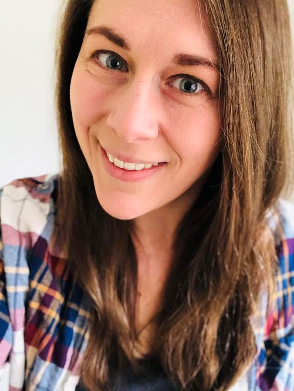
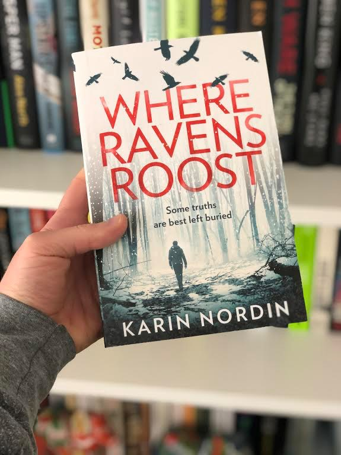

One of the greatest things about this day and age is the ability to connect with people who you would otherwise never meet. That’s the case with my chance meeting of Karin Nordin, author of Where Ravens Roost and current resident of the Netherlands.
 We first met in 2020 on Instagram, and I’ve been fortunate enough to see her go from the late stages of creating her novel to getting published with Harper Collins (who was also smart enough to pick up her second novel which she is currently finalizing). It’s been interesting watching her journey and the rise to stardom of her cat Watson (more on that later), and I’m lucky enough that she has agreed to let me interview her. Now, fair warning to all readers, I am not a professional interviewer and as such I do not have the ability to filter my questions strictly to her book and writing process. Things may get weird, you’ll definitely learn about who she is, and I apologize in advance for any lines I cross. Without further ado, lets begin:
Dicky:
Karin, I want to start off by saying it’s been great watching your journey on Instagram. You’ve done a fantastic job of keeping your post entertaining, with a good mix of information and a lot of humor. But right out the gate I have to ask what seems to be on the mind of a lot of your followers, when did you decide to have Watson become your PR animal and has the power of that position gone to his head?
Karin:
I think it’s clear to everyone who has met Watson that he was born for greatness. He refined his ego from a young age in preparation for this incredible responsibility. But he’s very market savvy. And he’s mastered the art of looking like he doesn’t work hard. That’s part of his image. But I can tell you it’s not easy napping for 17 hours a day.
Dicky:
Ok, lets jump into your book a little bit. We’ve spoken before about how your book doesn’t fit perfectly into any one thriller sub-genre, if you could create a sub-genre for it, what would it be?
Karin:
Ha! Good question. Readers could probably come up with something better than I ever could. The book is a combination of sub-genres. It’s not a true crime or police procedural even though the protagonist is a detective because he’s on suspension and investigating the events in the book on his own without help from local police. But because the character has a law enforcement background it’s not a true domestic thriller either. It’s also a Scandinavian/Nordic Noir in the sense that it takes place in Sweden and incorporates many of the thematic elements found in those books, but I wrote it in English so I hesitate sometimes to call it a true Scandi-Noir. Domestic Nordic Noir, perhaps?
Dicky:
And for anyone unfamiliar with your book, tell us a little bit about it.
Karin:
Where Ravens Roost follows the story of Detective Kjeld Nygaard who, while on suspension after his last case went horribly wrong, receives a mysterious phone call from his estranged father with Alzheimer’s Disease. When he returns to his hometown in the north of Sweden he discovers that his father claims to have witnessed a murder in the old family barn. But with no body, no evidence, and no help from local authorities, Kjeld will have to investigate on his own before the truth is forgotten forever.
Dicky:
Anyone who has seen your posts knows that you have a very humorous side, does any of that show up in your story?
Karin:
There is a definite wry humor to some of the writing, both in the narration and in many of the character interactions, that ventures into the realm of sardonic and tongue-and-cheek. Before I wrote this novel almost all of my stories featured a strong component of dry wit. And because this story was thematically darker than anything else I’d written it was important to incorporate that in small amounts so as not to make the story too heavy.
Dicky:
Considering that your book isn’t a comedy, where do the darker elements of your writing come from?
Karin:
That’s a dangerous question! It’s difficult to imagine anything darker than real life and while I hesitate to say it all comes from personal experience, a lot of real emotions went into writing this particular story. So, I think it’s fair to say that some of it comes from experience, but a lot of it just comes from asking myself ‘why?’ ‘Why would someone commit a crime?’ ‘Why would someone want to make life difficult for another person?’ ‘Why do people keep secrets?’ When you really look closely at those kinds of questions, or any question that forms the basis of a story, you start to put yourself in your characters’ shoes. Then you see what motivates people and what drives them to do what they do—good or bad. And in my process, it’s those motivations that reveal the more terrifying elements of what people are capable of.
Dicky:
This next question is very important, and one that I think a lot of people have been too afraid to ask you. How much of the book did Watson write?
Karin:
All of it. I’m just a PR stunt.
Dicky:
Ok, so maybe he didn’t physically write parts of the book, but judging by the amount of coverage he gets on your Instagram page, I think it’s fair to say he’s part of the process. How does Watson play into your writing process?
Karin:
I had a difficult time when I first moved to the Netherlands. New language, new culture, new environment, thousands of miles away from friends and family. It was quite depressing in the beginning. Then Watson came into my life and helped me focus on what was really important. I think anyone who spends a great deal of time around animals knows that they’re very sensitive to the emotions of the people they’re around. And Watson was no exception. If I was upset, he was upset. If I was happy, he was happy. So we built a routine together to maximize our happiness and productivity. Watson always sits near me—either on or close to my desk—when I write, and it’s a great motivating factor. He keeps me accountable. Of course, in a ‘who can sit the longest’ contest, he always wins. And while he doesn’t physically contribute to the story, he does so emotionally. Which is why he earned the last say in my book and a character inspired by him.
Dicky:
We’ve spoken a bit about this topic in the past, and for those who don’t know, I’m self-published and you’re traditionally published so it’s been really interesting to compare notes on the two sides. For me it was really important that my debut novel be self-published, and I know from the very beginning you wanted to be traditionally published. What factored in to that decision and was self-publishing ever an option you considered?
Karin:
Self-publishing was never on the horizon for me. And not because it isn’t a fantastic path for a lot of authors! But self-publishing requires an author to wear a lot of hats. You have to juggle writing, editing, marketing, publicity, cover design, proofreading, formatting—everything. I just don’t have the skills for a lot of those aspects of the publication process. And, somewhat shamefully, many of those aspects don’t interest me. I always just wanted to write stories. And while you do have to wear a few of those hats in traditional publishing as well, it’s not to the extreme as someone who pursues self-publishing. I also like the process of working with a team. I like the feedback I receive from my editor and marketing team and the opportunity to bounce ideas off of people who are more knowledgeable about the publishing process than I am. I also wanted to see my books in stores and that’s a much easier process with an established publisher behind you.
Dicky:
There’s a lot of information, and probably a bit of misinformation, out there on how to get traditionally published and what some of the pros and cons of being traditionally published are. What are some things you were told about traditional publishing that you found to be untrue in your experience?
Karin:
I think the biggest mistruth I heard from people was that once an author sells a book to a publisher, the publisher has ultimate control over everything in the book and won’t take the author’s opinion into consideration. And that simply wasn’t true. When it came to editing my book my editor made it very clear to me from the beginning that ultimately the major decisions about the direction of the story were on me. All of her suggestions were merely that—suggestions. In the end, of course, I used all of her suggestions because they really did improve the book and raise it to a level I couldn’t have done on my own. Another falsehood I heard was that I wouldn’t have any say in the book’s cover. But my editor and the designer did listen to what I liked and didn’t like about current trends in the market. And they incorporated that into the design.
Dicky:
And what are some things you found to be completely true?
Karin:
There is a hierarchy in the publishing industry. Certain titles will always get more attention, more marketing, more quotes. And that makes sense because publishing is a business. A publisher has to do everything in their power to make a profit, otherwise they wouldn’t be able to afford to put out books that don’t receive those huge marketing plans. If you’re lucky, you break out on your debut and instantly become one of those titles. But those titles are few and far between. Most authors have a slow-burn career. They establish their readership over time.
Dicky:
What advice would you give to someone on the fence about if they should self-publish or traditionally publish?
Karin:
You can always try the traditional publishing route first, and if you’re not satisfied with the outcome then you can begin the process of self-publishing. But there’s nothing that says you can’t do both. If you’ve written something that you believe will be more successful in the self-publishing market, then you should self-publish. You can always traditionally publish another project. I’ve come across quite a few authors, both at my publisher and at others, who do both. They self-publish in one genre (romance, for example) and traditionally publish in another (i.e. crime.)
Dicky:
One of the things I really like about you is how approachable you are. As a whole, I feel like this is the way most people are in the writing community. Is this what you’ve found as well?
Karin:
People in the writing community, especially on Instagram, have been incredibly supportive and approachable! I’m actually overwhelmed by the number of friends—not followers, but actual friends—I’ve made on that platform. I always leaned on the group of writer friends I made at university to understand the difficulties of the writing process. And as time and distance separated us I worried that I would lose that connection. But I’ve rediscovered it in people I’ve met in the online writing community.
Dicky:
Have you found traditionally published authors to be approachable as well?
Karin:
Yes! And, to be honest, this is the one thing about traditional publishing that surprised me the most. I still sometimes see other authors as being in a different league than myself, but the truth is that once a publisher picks you up you’re suddenly in the same ‘room’ as them, so to speak. A lot of authors who have been on my shelves for years and who have inspired my desire to pursue writing suddenly reached out to me. So far they’ve all been incredibly friendly and supportive. It’s weird when you realize that they’re just normal people, too, but they are.
Dicky:
Given the opportunity to pick two authors to hang out with, one self-published and one traditionally published. Who are the two authors you pick and why?
Karin:
I’m going to cheat a bit with my first answer. The self-published author I’d most like to meet is Mel Sherratt who also writes as Marcie Steele. She’s actually a hybrid author who is both traditionally published and self-published. She has a huge readership in both categories of her writing and I’d really love to know how she does it.
As for strictly traditionally published authors, I’d like to hang out with Stephen King for a day. Maybe go to a baseball game with him. I think that’d be fun.
Dicky:
Something people may not know about you is, in addition to being a talented thriller writer, you’re also a comic book geek. What is it that drew you to comic books, and how old were you when you first started reading them?
Karin:
I don’t remember how old I was, to be honest. But I don’t think I was able to read yet. My mom used to buy me issues Casper the Friendly Ghost and Wendy the Good Little Witch at the grocery store every week. Then in the ‘90s I was introduced to the X-Men animated series which thrust me into the world of superheroes.
Dicky:
Who is your favorite character?
Karin:
Doctor Strange.
Dicky:
Do you think comics have influenced the way you write?
Karin:
I think comic books provide great insight into writing dialogue. Granted, sometimes it’s deliberately info-dumping because you don’t have large swaths of narration that you do in prose writing, but in general the dialogue is very purposeful. It has to move the story forward and reflect the visual elements on the page. There also isn’t a lot of room for unnecessary scenes and conversations. Every word has to have a reason for being there, which I think is a good tactic for evaluating any kind of written scene. And I’m sure that has influenced some of my writing and my editing process.
Dicky:
What comic book character do you think the main character of your book is most likely to get along with? Who would they absolutely get in a fight with?
Karin:
That’s tough. I don’t think Kjeld is really into comic books. Mostly because he just doesn’t have any time. I think he’d probably get along well with May Parker (Spider-Girl) because she’s a bit like his daughter. And I think he’d enjoy going out with older Peter Parker after he’s retired his Spiderman image. I don’t think he’d get along well with Scott Summers (Cyclops from the X-Men) because he really doesn’t have patience for that kind of self-righteous snobbery.
Dicky:
Do you think you would get along with your main character?
Karin:
Sure, I think we’d get along with each other. I don’t know if we’d be best friends, but I think we’d be able to work together. We share a lot of the same tastes in music and philosophies about life. But we share some of the same stubbornness as well, so I think we’d clash on certain things—like which restaurant to go to for dinner.
Dicky:
I know you have a second book in the works already, but what are your thoughts on expanding your series further? Is this going to be something you expand indefinitely, or are you taking a break after book two and beginning a different story?
Karin:
Indefinitely is a long time! I have a lot of ideas for these characters and this world. I already know some stories about them that I’d like to tell, particularly when Kjeld’s daughter is older. I’ve already made a brief outline of events in each of their lives that could span numerous books. And I think as long as readers are interested in the characters I could continue writing about them. I have different story ideas with other characters in other genres that I’d like to write, as well, but a lot of what I’ll write next depends on the reception of book two. As for whether Kjeld will get a book three that’s up to the readers … And my publisher, of course!
Dicky:
If you couldn’t write thrillers, what genre would you be most likely to write?
Karin:
Horror or westerns.
Dicky:
Alright, final question, and the one that is most likely to divide your readers. Think carefully before answering. Best option when grilling, charcoal or propane?
Karin:
What? No firewood option? Look, I’m terrible at any form of cooking. I actually have a very conscious fear of ovens. But I’m a steak lover. And when it comes to steak I definitely think charcoal brings about a stronger flavor. Even if propane is easier to clean up. (Which is usually my job since I don’t do the cooking or grilling.)
Thank you so much to Karin Nordin for giving me the chance to interview her. Hopefully I haven’t scared her off from future interviews, and maybe I can even talk her into having a comic book debate in the future.
If you are interested in finding out more about Karin Nordin, her writing journey, and her book (and why wouldn’t you be), you can find her:
Web: http://www.karinnordin.com/
Twitter: https://twitter.com/KNordinAuthor
Instagram: https://www.instagram.com/karinnordinauthor/
Do you have a question for Karin Nordin? Have you read her debut novel? Go to her page and let her know!